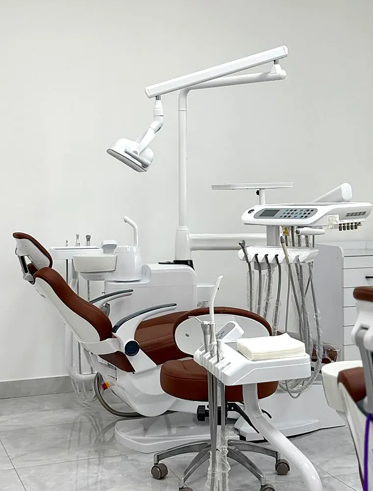
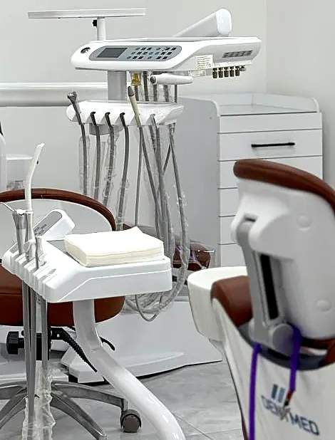
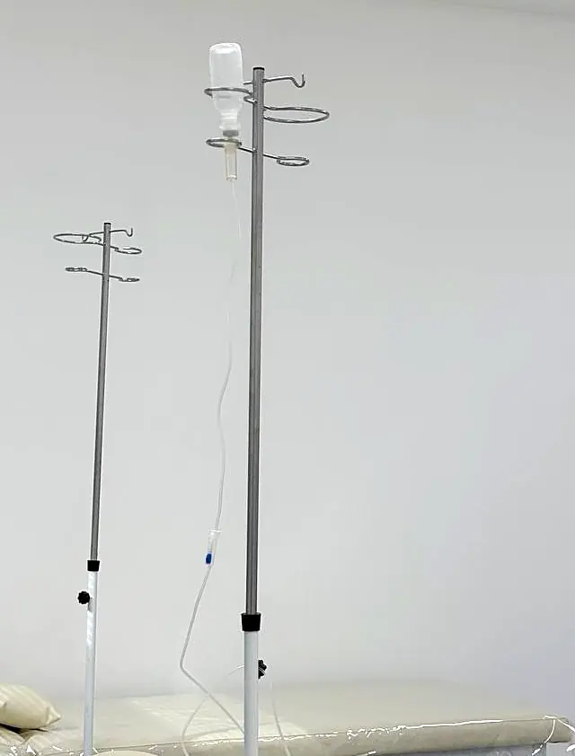

Круглосуточная помощь
Клиника работает 24 часа в сутки без выходных и праздников — приём и консультации доступны тогда, когда это действительно нужно.
Открыто сейчас Ташкент
Многопрофильная клиника в центре Ташкента. Приём специалистов, диагностика и лабораторные анализы — круглосуточно, без выходных.


24/7 Вечер — мы открыты.
Двигайте время: клиника открыта в любой час
Направления

Стоматология Лечение, протезирование, гигиена и детский приём — с понятным планом и без спешки.Головные боли, боли в спине, нарушения сна — диагностика и лечение.
Кровь, гормоны, инфекции, анализы для госпитализации и check-up.
Осмотры, наблюдение за развитием и консультации по вакцинации.
Исследования на современном оборудовании с понятной расшифровкой.
Лечебные процедуры под наблюдением специалиста.
Полный перечень услуг и запись на приём.
О клинике
Мы соединяем современную диагностику, внимательное отношение и прозрачные рекомендации на каждом этапе лечения.
Клиника работает 24 часа в сутки без выходных и праздников — приём и консультации доступны тогда, когда это действительно нужно.
Исследования проводятся на современном оборудовании, а результаты врач объясняет понятным языком — без медицинского жаргона.
Врачи с многолетней практикой и узкой специализацией. Каждому пациенту — своё время и внимание, без потока и спешки.
Чистые кабинеты, спокойная обстановка и заботливый персонал — от момента записи до завершения лечения.
План лечения обсуждается заранее. Вы понимаете, что входит в приём и за что платите, — без навязанных услуг.
Команда
Диагностика, лечение и внимание к деталям — команда врачей, на которых можно положиться.
Невролог
Стоматолог-терапевт

Специалист по хиджаме

Стоматолог-терапевт
Врач лаборатории

Стоматолог-ортопед

Детский невролог

Интегративный стоматолог

Лаборант
Клиника изнутри


Как проходит приём
Оставляете заявку на сайте или звоните — администратор подбирает время и врача.
Подтверждаем запись и напоминаем о визите ближе к дате приёма.
Осмотр и беседа, при необходимости — диагностика и анализы на месте.
Понятные рекомендации, план дальнейших шагов и сопровождение.
Отзывы пациентов
Отзывы загружаются напрямую с Яндекс Карт — мы их не редактируем и не отбираем.
Вопросы
Если вы не нашли ответ на свой вопрос — просто позвоните нам, администратор поможет подобрать врача и время.
Запись заранее помогает выбрать удобное время и сократить ожидание. Но при необходимости мы стараемся принять и в день обращения — особенно при острых состояниях.
Мы выполняем основные лабораторные анализы: общий и биохимический анализ крови, гормоны, инфекции, анализы для госпитализации и программ check-up. Полный список можно уточнить у администратора.
Да, вы можете оставить заявку через сайт, написать в мессенджер или позвонить. Администратор уточнит детали и подтвердит время приёма.
Возьмите паспорт, список принимаемых препаратов и, по возможности, предыдущие выписки и результаты анализов. Это поможет врачу быстрее разобраться в ситуации.
Да, в клинике есть педиатры и узкие детские специалисты. Мы создаём максимально спокойную атмосферу для ребёнка и родителей.
Запись на приём
Оставьте номер, и администратор поможет подобрать врача и удобное время. Мы работаем круглосуточно.
Заполните форму — администратор перезвонит и подтвердит запись.
Контакты